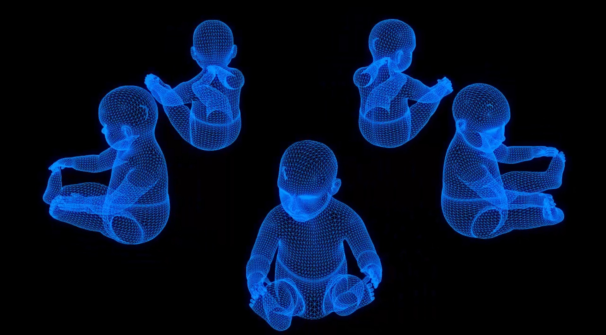

Sobre el proyecto
NatalData CDMX es una plataforma diseñada para facilitar la consulta y visualización de datos de nacimientos en la Ciudad de México, utilizando información proveniente del Sistema Nacional de Información en Salud (SINAC). Su objetivo es proporcionar una herramienta clara y accesible para el análisis de la natalidad, apoyando a estudiantes, investigadores y ciudadanos interesados en comprender estos fenómenos.

Misión
Proporcionar a ciudadanos, investigadores y personal de salud una herramienta de consulta clara, accesible y visual sobre los registros de nacimientos en la Ciudad de México, promoviendo el análisis de la salud materna e infantil.
Visión
Ser una plataforma de referencia en la visualización y análisis de datos de natalidad en México, contribuyendo a la toma de decisiones informadas en políticas públicas y estudios sociales.
Fuente de datos
Los datos utilizados provienen del Sistema Nacional de Información en Salud (SINAC), con registros estructurados de nacimientos en México. Para este proyecto se utiliza información del periodo 2013 a 2023.